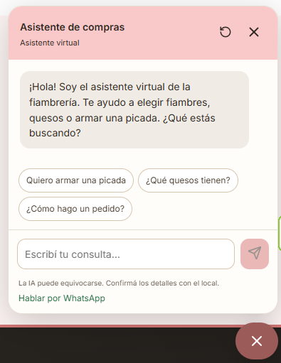

Catálogo de productos
Explorá fiambres, quesos y panificados con imágenes, precios y opciones de producto. Una presentación que puede adaptarse a los artículos de tu comercio.
Conocé una tienda de ejemplo para un almacén o una fiambrería: productos, opciones de compra y un agente de IA integrado que responde en base a los productos cargados.
Sitio de prueba externo · Se abre en una pestaña nueva

Captura de la tienda de prueba. El catálogo puede cambiar.
Tu comercio, también online
Un ejemplo de cómo presentar tus productos y acompañar las consultas de tus clientes dentro de la misma tienda.
Explorá fiambres, quesos y panificados con imágenes, precios y opciones de producto. Una presentación que puede adaptarse a los artículos de tu comercio.
Buscá un producto, recorré las categorías y explorá los filtros de ofertas y las opciones de orden del catálogo.
Abrí los detalles de un producto y explorá sus opciones y el carrito para conocer la experiencia de compra de la tienda.
Conversá con el agente integrado para consultar sobre los productos cargados y recibir orientación mientras recorrés la tienda.
Atención dentro de la tienda
El agente usa la información de los productos cargados para responder consultas. El visitante puede preguntar por los quesos del catálogo o pedir ayuda para armar una picada sin salir de la tienda.
Las respuestas de IA pueden contener errores. Confirmá los detalles con el comercio.

Tu primera prueba
Explorá las categorías o usá el buscador. Revisá los precios y las opciones de los productos que te interesen.
Abrí un producto y explorá el carrito. El objetivo es conocer el recorrido, sin completar una compra ni un pago.
Abrí el chat y preguntá “¿Qué quesos tienen?” o “Quiero armar una picada”. Explorá cómo responde con la información del catálogo.
Se abre en una pestaña nueva. Esta presentación queda disponible para volver.
Adaptada a tu comercio
Contanos qué vendés y cómo atendés hoy. Podemos preparar tu tienda y un agente con información de tus productos.